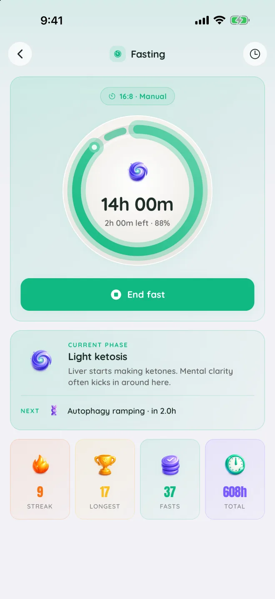
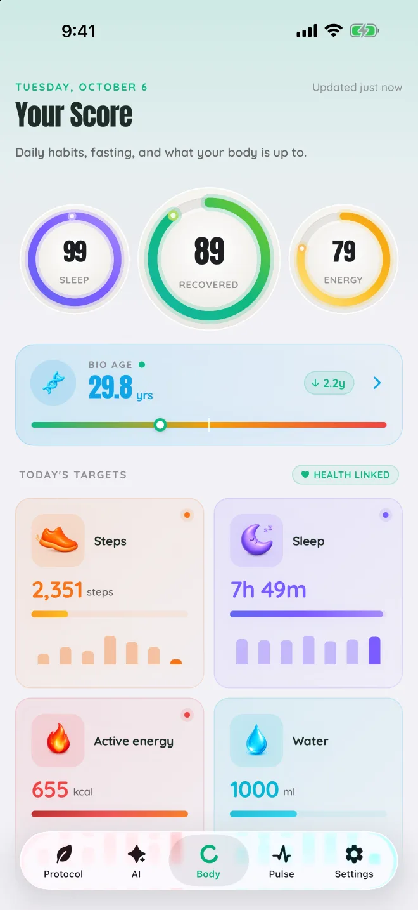
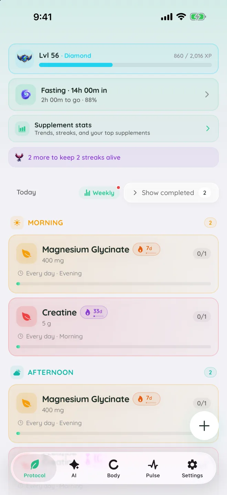
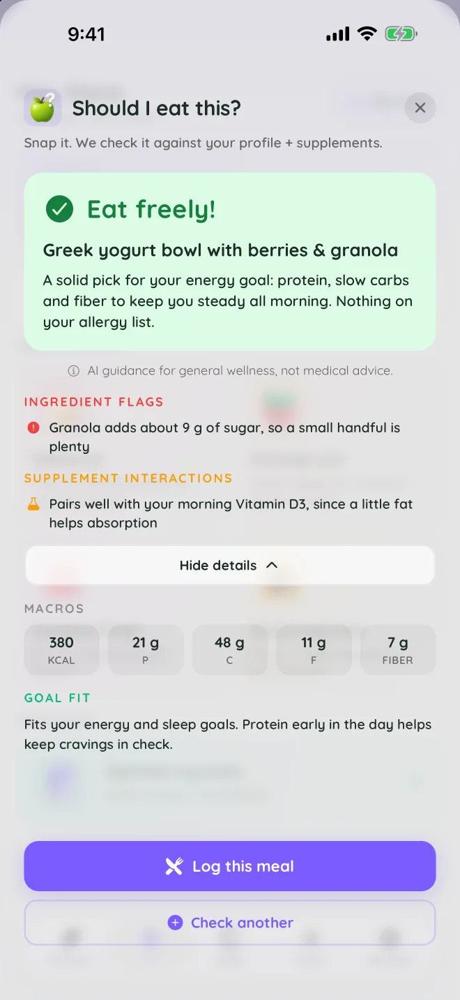
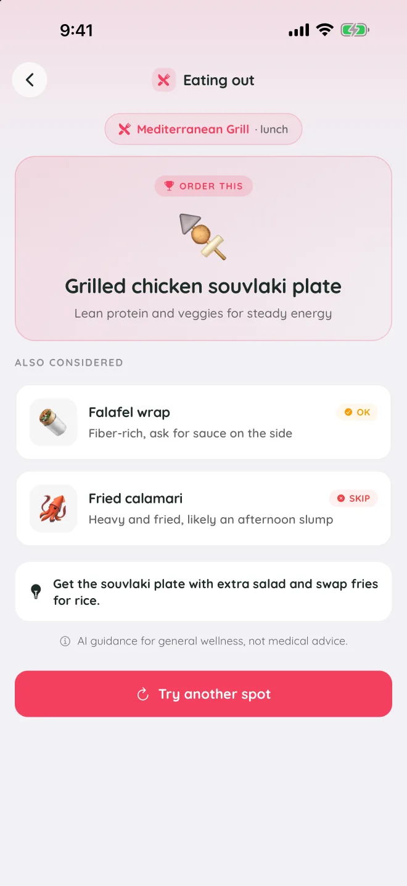
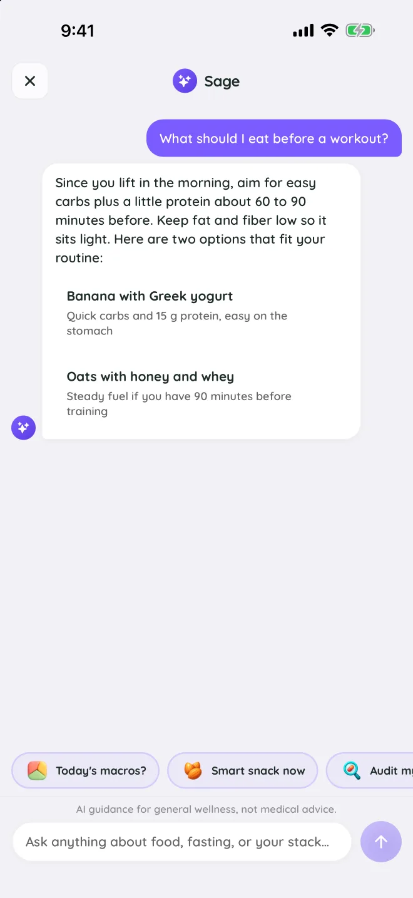
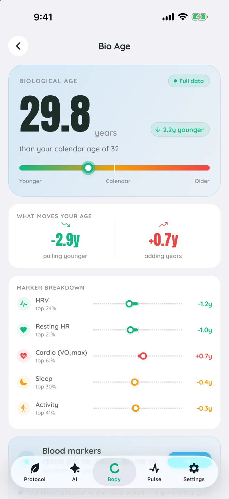
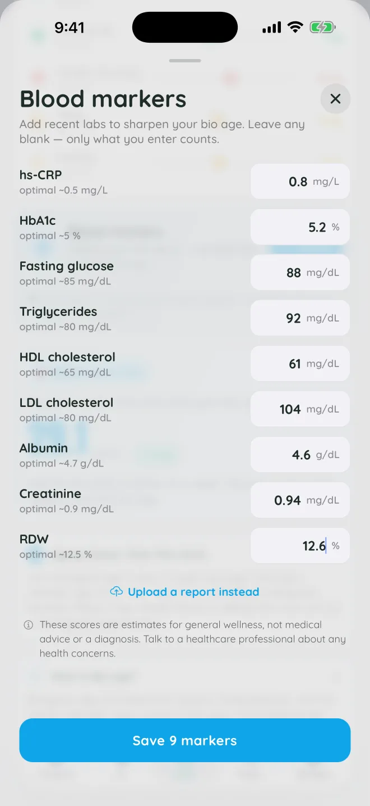

Daily targets
Steps, sleep, active energy, water and weight, each with a goal and a week of history.
Longevity · iPhone and iPad
Sage turns Apple Health into Recovery, Sleep and Energy scores and a weekly Bio Age estimate, then keeps your supplements, water, fasting and routines on track, with an AI coach for everything in between.
Free to download · Works with Apple Health · See the app



Inside Sage
The panels below behave like the app. Tap a ring, drag through a fast, pour a glass, tick off your stack.
01Body scores
Sage reads sleep, heart rate, HRV, resting heart rate, activity and more from Apple Health, and turns them into three scores every morning. Once a week it estimates your Bio Age and shows what is pulling it younger or older.
RecoveredLed by HRV against your own baseline, with resting heart rate and last night’s sleep. Higher means ready for more.
Tap a ring to see what feeds it.
Liver starts making ketones. Mental clarity often kicks in around here.
Next: Autophagy ramping in 2h 00m
02Fasting
Start a fast and watch seven body phases unfold, from fed state to deep reset. Streaks, your longest fast and total hours sit right under the ring, and a Live Activity keeps the timer on your Lock Screen.
Drag the slider or tap a phase. Phase timings are general guidance, not medical advice.
03Water
A cup, a bottle or a big bottle, one tap each. Sage sets a daily target, draws your rhythm through the day, and saves every drink to Apple Health. It never writes anything else there.
Tap a cup.
04Supplements
Add your stack once, with the dose and the time of day. Sage reminds you, keeps a streak for every supplement, and turns each dose into XP on the way up the ranks.
Morning · 0/3 taken
Tick one off.
05AI coach
Ask about a meal, a menu or a craving and get an answer shaped by your goals, your stack and your day. The coach knows what you are taking and what you have logged.



The AI tools are part of Sage Pro. AI guidance is for general wellness, not medical advice.
06Blood markers
Type in your blood markers or upload a lab report, and Sage folds them into your Bio Age estimate alongside the data from Apple Health. Each marker shows where it sits against its optimal range.


07Pulse and routines
Pulse keeps today’s targets in one place, and routines give you a plan to follow when you want one.
Steps, sleep, active energy, water and weight, each with a goal and a week of history.
Eight ready-made plans, from Sleep reset and Energy boost to Stress reset and Lean bulk, one day at a time.
Each morning Sage sums up yesterday, and each week brings a recap of your best days and trends.
Privacy
Sage asks for what it needs and says why. The privacy policy lists every piece of data and where it goes.
Sage reads the metrics behind your scores. The only thing it writes back is the water you log.
Start without an account. Link Apple or Google later to keep your data across devices.
No advertising, no analytics SDKs and no data sold. The AI tools ask for your consent first.
Delete your account from Settings, or write to us to have everything erased. How it works.
Sage is free to download on iPhone and iPad, with Sage Pro for the AI coach and the full set of scores. The Android version is on its way.
Works with Apple Health · For general wellness, not medical advice